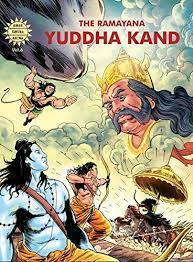

|  |
The Yuddha Kanda is the greatest of the Kandas, as it contains the accounts of the Great Ramayana War between Rama’sh and Ravana’s army. This Kanda also has the description of the story as to how the great Rama Setu bridge was built across the sea, using stones that floated on water as they had Rama’s name engraved on them. It was through this bridge that Rama and his great army crossed over to Lanka. Rama was even joined by Ravana’s renegade brother, Vibhishana.
This Kanda also has the great Hindu Epic story of Hanuman carrying an entire Mount Sumeru to Lanka, as he could not identify which herb would cure Lakshmana, who was seriously injured with a powerful weapon hurled at him by Indrajit, Ravana’s son. Eventually the war ends when Rama kills Ravana, and he crowns Vibhishana on the throne of Lanka.
The great Agni Pareeksha, the test performed by Sita to prove her purity, is accounted in this book. Sita plunges into the sacrificial fire, on Rama’s orders. The lord of fire, Agni raised and returns Sita unharmed, thus proving the integrity of her soul and body. At the end of the Yuddha Kanda, Rama’s exile tenure is also complete and he returns to Ayodhya welcomed with lights and celebrations.
|
|---|
| Back | Home Page |